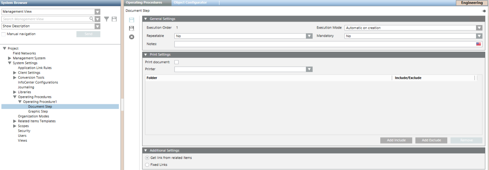
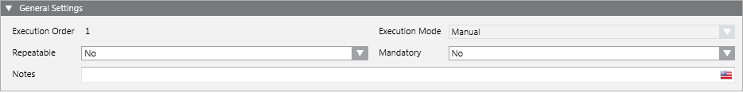
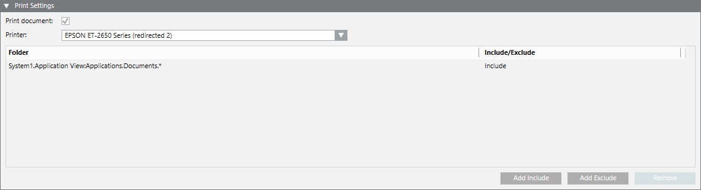
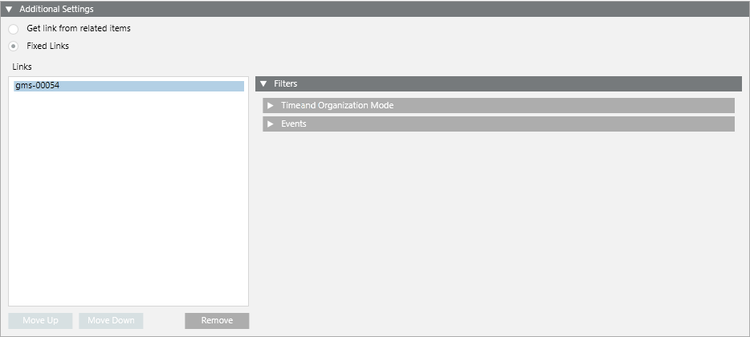

Procedure Step Workspace
When you configure an operating procedure and select a procedure step in System Browser, a workspace displays where you can configure the settings for that step.

General Settings of a Procedure Step
When you configure a procedure step, the General Settings expander lets you specify some aspects of its execution.

Execution Order
Indicates the step position in the procedure, and hence its execution order. By default, steps are numbered based on the order in which you add them to the procedure. You can modify the execution order from the operating procedures workspace (see Steps of an Operating Procedure).
Execution Mode
Sets how the step will be executed:
- Manual: This step is launched manually by the operator.
- Automatic on creation: The step is executed automatically as soon as the triggering event occurs.
- Automatic on first treatment: The step is executed automatically as soon as the operator starts handling the triggering event.

The Execution Mode field can be configured for the Alarm Printout, Document, or Report steps.
The Graphics and Treatment Form steps can only be manual.
This parameter can also be modified from the Operation tab. See Properties and Commands of Operating Procedure Steps.
Repeatable
Sets whether the step can be done more than once during the same operating procedure.
Mandatory
Set whether this step is required to complete the procedure or can be skipped. Mandatory means the step must be executed to complete the procedure and close the event.
Print Settings for the Document Step
When you configure a document step, the Print Settings expander lets you set the capability to automatically print document-related items for an automatic document step.

Print document: This option lets you activate the capability to automatically print document-related items.
Printer: Sets the printer for the document step, among the Desigo CC printers available in the configuration.
Folder: Sets one or multiple document folders that contain the document-related items to be printed. You can include or exclude document folders, or cancel the operation.
Additional Settings of a Procedure Step
When you configure a procedure step, the Additional Settings expander lets you configure links to resources--such as documents, floor plans, or reports--that you want to display along with this procedure step during assisted treatment.

The types of resources you can link depend on the type of procedure step:
- Alarm printout step: event printout report template object
- Document step: document object
- Graphic step: graphic object
- Report step: event detail log, activity log, or event log report template object
- Treatment form step: alarm report template object
Depending on the type of step, you may have one or both the following options for specifying what resources you want to link:
Get Link from Related Items: This option lets you to automatically link all the related items available for the point in alarm that triggered the operating procedure. These are the resources that will be displayed along with the step during assisted treatment.
Fixed Links: This option lets you manually link all the resources that you want to display along with this procedure step during assisted treatment. You can link several objects by dragging the corresponding objects from System Browser to the Links area. You can change the order of the links with the Move Up and Move Down buttons or use the Remove button to remove any unwanted links.
Filters of a Procedure Step
You use filters to configure when and for what events a resource linked to a procedure step should be displayed along with that step. For example, you can configure a procedure that is triggered by 3 types of events, and use the filter to differentiate what document displays in a document step, depending on the event.

When you configure an operating procedure, the Filters expander—available for all the steps— lets you set the following:
- Time and Organization Mode. This defines a set of time-dependent preconditions for the procedure step (for example, only if it is a weekday, and the building is occupied). For details, see Time and Organization Mode Conditions. Each condition occupies one row and at least one row must be true (OR logic between rows) to assert the time-dependent conditions trigger.
- Events. This defines the event or combination of events (for example, an alarm in a critical area) that will trigger the procedure step. For details, see Events Conditions. Each condition occupies one row and at least one row must be true (OR logic between rows) to assert the Events trigger.
- If you do not specify any event type for the first fixed link in the list, during assisted treatment this fixed link will be used for all types of events.
- If you specify an event type for the first fixed link in the list, but not for any of the other ones, during assisted treatment the system will behave as follows:
- If the event matches the event type of the first fixed link, this fixed link will be used.
- If the event does not match the event type of the first fixed link, the second fixed link will always be used instead. - If you set all the fixed links with at least one event type specified, but the event that occurs does not match any of them, the system automatically takes the first related item available for the point in alarm that triggered the operating procedure.
An AND logic is applied between the filters: time-dependent and events conditions must both be asserted (true) for the procedure step to be triggered.
If the filter conditions are not met for any of the linked resources, the procedure step will be executed displaying a related item (if available) otherwise without displaying any resource.